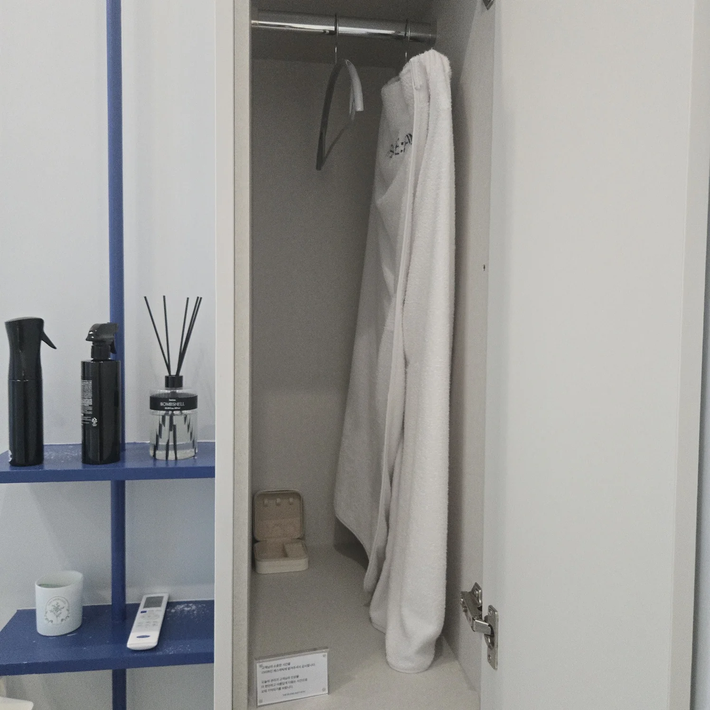
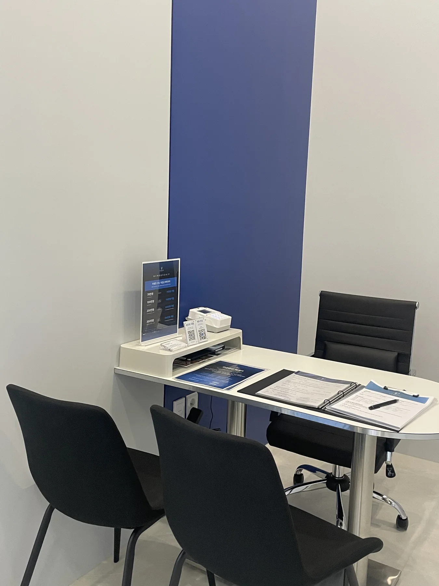

머무는 순간까지
관리의 일부가 되도록.
청주 가경동 더리파인의 실제 공간입니다. 화이트와 브랜드 블루를 중심으로 차분하고 프라이빗한 케어 동선을 구성했습니다.




PRIVATE & QUIET오직 한 사람의 변화에
오직 한 사람의 변화에
집중할 수 있는 공간.
관리 공간과 상담 동선, 파우더 공간까지 각 단계가 끊기지 않도록 구성했습니다.
방문 안내 보기청주 가경동 더리파인의 실제 공간입니다. 화이트와 브랜드 블루를 중심으로 차분하고 프라이빗한 케어 동선을 구성했습니다.


관리 공간과 상담 동선, 파우더 공간까지 각 단계가 끊기지 않도록 구성했습니다.
방문 안내 보기